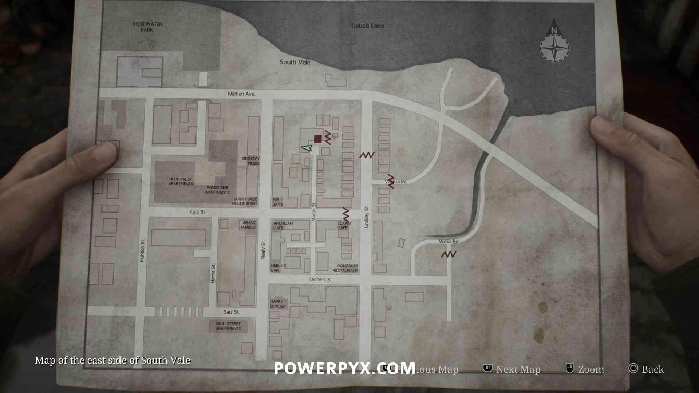
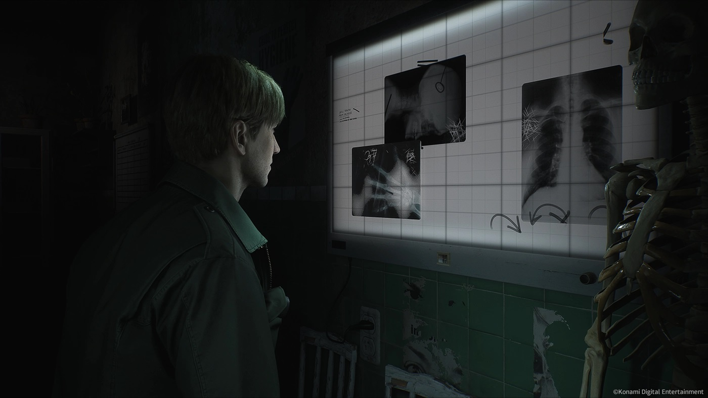

Pueblo de Silent Hill
El misterioso pueblo de Silent Hill está cubierto de niebla y lleno de criaturas monstruosas.
Es un lugar donde la realidad y la pesadilla se entrelazan, y donde los personajes enfrentan sus mayores miedos y pecados.
Hospital Brookhaven
El hospital es uno de los lugares más inquietantes del juego, lleno de corredores oscuros y enfermeras deformes.
Aquí, los jugadores experimentan el miedo psicológico en su forma más cruda, ya que el hospital refleja los miedos y la culpa de los personajes.
Lago Toluca

El Lago Toluca tiene una importancia especial en la historia de Silent Hill.
Es un lugar clave donde se revelan importantes detalles sobre el pasado de James y su relación con su esposa.